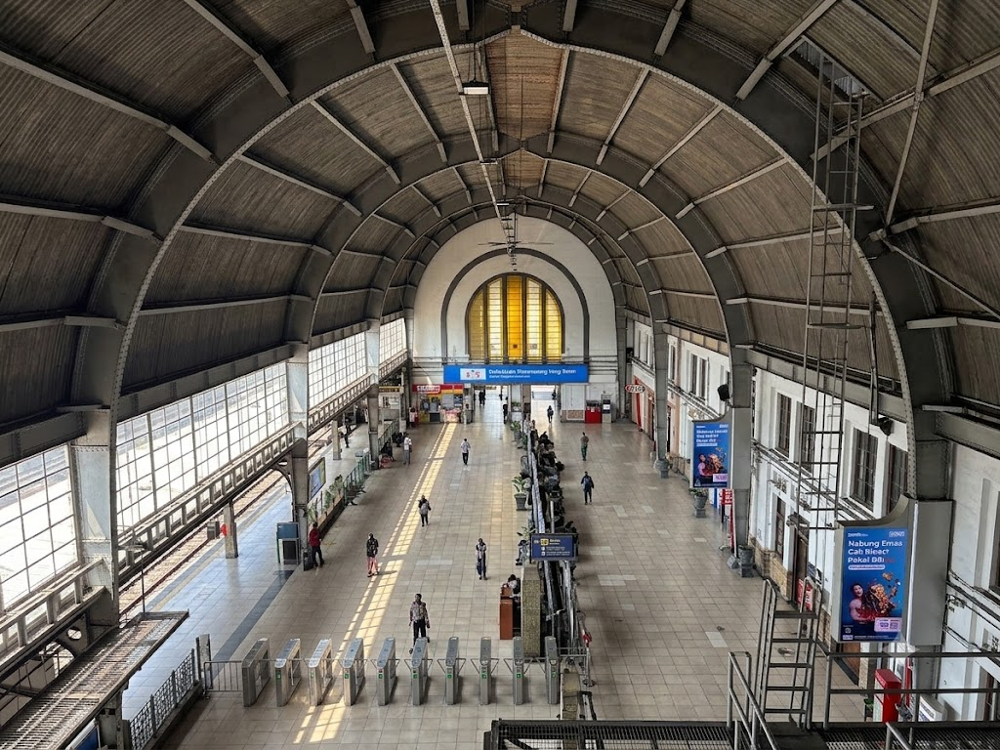

初抵雅加達蘇加諾-哈達機場的那天，我搭上冷氣極強的機場火車（Railink），一路晃進了這座擁有千萬人口的巨型城市。當列車停靠，我提著行李走出車站，踏入充滿荷蘭殖民色彩的舊城區（Kota Tua）時，迎面而來的是接近赤道的濕熱空氣、無止盡的車流喇叭聲，以及街頭小販的叫賣。那一刻，我清楚意識到：我的舒適圈，已經徹底被拋在腦後了。
文化衝擊：在「橡皮筋時間」裡撞牆的焦慮
在雅加達的日子，最先擊垮我的不是語言，而是工作文化。帶著過去在快節奏環境裡養成的習慣，我每天盯著進度表，試圖用高壓的 KPI 推進專案。但印尼同事們的哲學卻是「Jam Karet」（橡皮筋時間）——會議總是遲到、進度充滿彈性，他們最常笑著對我說的一句話就是：「Pelan-pelan saja（慢慢來就好）。」
一開始，這種節奏讓我感到深深的無力與孤立。我像是這座城市裡唯一一個轉速過快的齒輪，怎麼也無法咬合。那段時間，我唯一的慰藉是下班後路邊攤的一盤**印尼炒飯（Nasi Goreng）**。濃郁的甜醬油（Kecap Manis）配上嗆辣的參巴醬（Sambal），大火快炒的焦香和那一顆邊緣煎得酥脆的半熟蛋，成了我在異鄉少數能確實掌握的溫暖。
經典酒店的霓虹，照亮了深不見底的孤獨
為了幫我排解壓力，當地同事在週末帶我去了知名的**經典酒店（Classic Hotel）**。那是雅加達夜生活的縮影，一棟彷彿沒有休止符的娛樂迷宮。我們喝著 Bintang 啤酒，看著台上樂團賣力地表演，四周充斥著震耳欲聾的音樂、酒精的氣味與人群的喧鬧。
就在大家舉杯歡呼的那個瞬間，我坐在包廂的角落，卻感到一種前所未有的抽離感。
那種孤獨感無比清晰：當你身處在極度熱鬧的狂歡中，卻發現自己的靈魂根本不在現場。
我突然明白，我的焦慮和孤獨，並不是因為我是一個人，而是因為我一直在「對抗」。我用自己的標準對抗印尼的文化，用焦慮對抗當地的隨性，最終，我也把自己隔絕在了這座城市之外。
找回節奏：從對抗環境，到向內臣服
意識到這一點後，我決定停止無謂的內耗，開始嘗試另一種生活策略。我把這稱之為「在喧囂中放過自己」的練習：
- 放下掌控欲：承認自己無法改變一座城市的運轉方式。如果會議延遲了半小時，我就利用那半小時好好喝杯印尼咖啡，而不是在座位上乾著急。
- 融入當下的感官：不再邊吃炒飯邊回覆 Email，而是專心感受食物的辣度與溫度；在經典酒店看表演時，不再想著明天的報表，而是單純讓自己跟著音樂搖擺。
- 重新定義孤獨：不再把「無法完全融入當地」視為一種失敗。作為一個異鄉人，保有適度的疏離感，其實也是一種保護內在平靜的邊界。
在熱帶的失控中，找回內在的秩序
幾個月後，我依然會在舊城區的塞車陣中動彈不得，依然會面對同事們的「慢慢來」，但我不再為此暴躁。我學會了在雅加達這種看似失控、混亂的生命力中，找到屬於自己的內在秩序。
異地生活最大的挑戰，往往不是解決外在的麻煩，而是如何安撫內在那個恐懼失控的自己。
如果你也正在海外職場中掙扎，被文化衝擊與深深的孤獨感壓得喘不過氣，歡迎到作品與服務頁面，看看我提供的一對一跨文化適應與心靈陪伴方案。讓我陪你一起，在混亂的世界裡找回自己的錨。